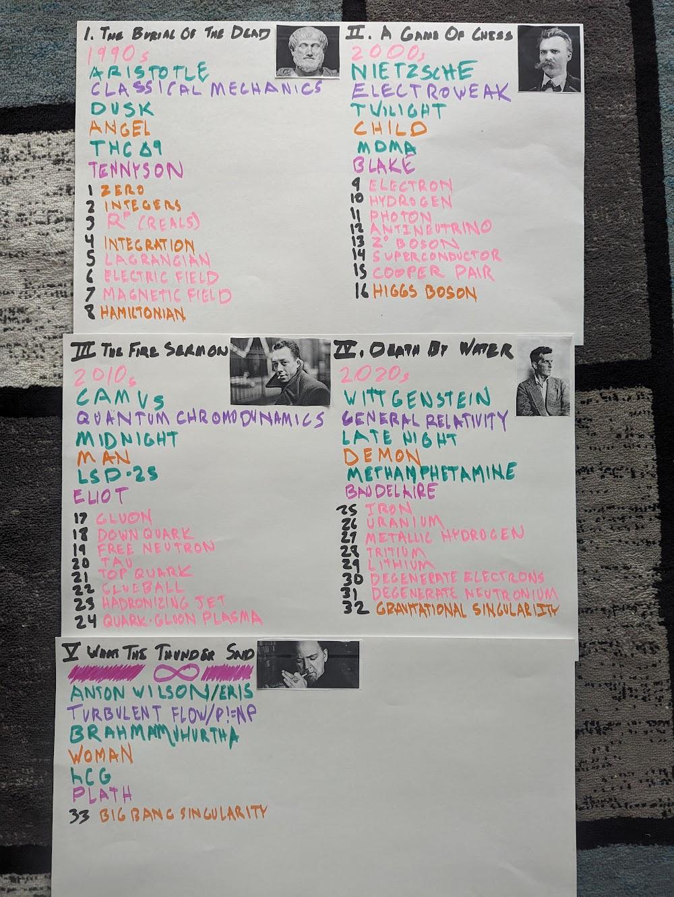

In my hubris, I consciously used James Joyce's *Ulysses* as a model, as it in turn used Homer's *Odyssey*. Originally, I had a schema mapping each chapter to a particle, and each part to a philosopher, a stage of human development, a poet, a physical theory, a stage of the evening, a drug, and a decade. All of this went almost immediately out the window; if you know of a good way to thematically center a chapter around the τ (tau lepton), I'm all ears.
I had originally planned for 33 chapters across five parts. It turned out being 29 chapters, plus an epilogue. The five parts were retained. They're taken directly from Robert Anton Wilson's Illuminatus! trilogy, where they're described as the five stages of the Illuminati's cyclic theory of history. These are themselves an extension from the three-part system of Joachim of Floris and the four-part system of Giambattista Vico; interested readers ought consult that fascinating book, especially its Appendix ג, "The Illuminati Theory of History".